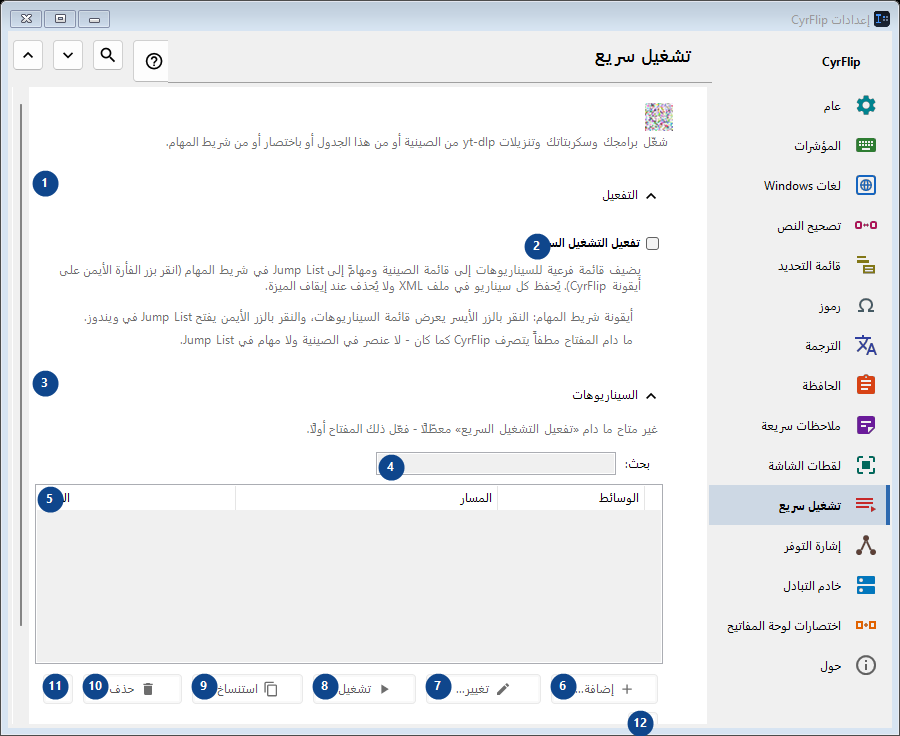
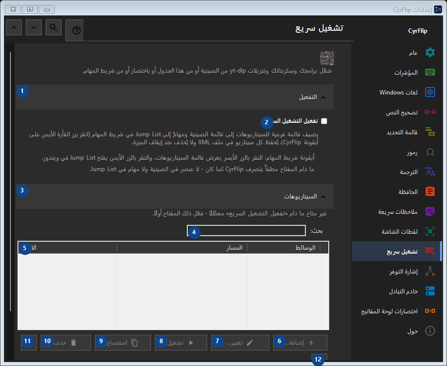

تشغيل سريع
الغرض
شغّل برامجك وسكربتاتك وتنزيلات yt-dlp من الصينية أو من هذا الجدول أو باختصار أو من شريط المهام.


ترتيب الاستخدام
تُطبق الإعدادات فورًا. لا يوجد ترتيب إلزامي؛ استخدم المجموعات أدناه.
العناصر
1. التفعيل
استخدم هذا الأمر لتنفيذ الإجراء المذكور. اقرأ أي طلب تأكيد قبل الموافقة.
اختصاراتك2. تفعيل التشغيل السريع
يضيف قائمة فرعية للسيناريوهات إلى قائمة الصينية ومهامَّ إلى Jump List في شريط المهام (انقر بزر الفأرة الأيمن على أيقونة CyrFlip). يُحفظ كل سيناريو في ملف XML ولا يُحذف عند إيقاف الميزة.
اختصاراتك3. السيناريوهات
استخدم هذا الأمر لتنفيذ الإجراء المذكور. اقرأ أي طلب تأكيد قبل الموافقة.
اختصاراتك4. بحث
غير متاح ما دام «تفعيل التشغيل السريع» معطّلًا - فعّل ذلك المفتاح أولًا. هذا العنصر غير متاح حاليًا. فعّل الميزة أو اختر إدخالًا أولًا.
اختصاراتك5. تشغيل سريع
غير متاح ما دام «تفعيل التشغيل السريع» معطّلًا - فعّل ذلك المفتاح أولًا. هذا العنصر غير متاح حاليًا. فعّل الميزة أو اختر إدخالًا أولًا. الاسم / المسار / الوسائط / مجلد العمل / مسؤول / الاختصار
اختصاراتك6. إضافة...
غير متاح ما دام «تفعيل التشغيل السريع» معطّلًا - فعّل ذلك المفتاح أولًا. هذا العنصر غير متاح حاليًا. فعّل الميزة أو اختر إدخالًا أولًا.
اختصاراتك7. تغيير...
غير متاح ما دام «تفعيل التشغيل السريع» معطّلًا - فعّل ذلك المفتاح أولًا. هذا العنصر غير متاح حاليًا. فعّل الميزة أو اختر إدخالًا أولًا.
اختصاراتك8. تشغيل
غير متاح ما دام «تفعيل التشغيل السريع» معطّلًا - فعّل ذلك المفتاح أولًا. هذا العنصر غير متاح حاليًا. فعّل الميزة أو اختر إدخالًا أولًا.
اختصاراتك9. استنساخ
غير متاح ما دام «تفعيل التشغيل السريع» معطّلًا - فعّل ذلك المفتاح أولًا. هذا العنصر غير متاح حاليًا. فعّل الميزة أو اختر إدخالًا أولًا.
اختصاراتك10. حذف
غير متاح ما دام «تفعيل التشغيل السريع» معطّلًا - فعّل ذلك المفتاح أولًا. هذا العنصر غير متاح حاليًا. فعّل الميزة أو اختر إدخالًا أولًا.
اختصاراتك11. نقل لأعلى
غير متاح ما دام «تفعيل التشغيل السريع» معطّلًا - فعّل ذلك المفتاح أولًا. هذا العنصر غير متاح حاليًا. فعّل الميزة أو اختر إدخالًا أولًا.
اختصاراتك12. نقل لأسفل
غير متاح ما دام «تفعيل التشغيل السريع» معطّلًا - فعّل ذلك المفتاح أولًا. هذا العنصر غير متاح حاليًا. فعّل الميزة أو اختر إدخالًا أولًا.
اختصاراتك13. تصدير...
غير متاح ما دام «تفعيل التشغيل السريع» معطّلًا - فعّل ذلك المفتاح أولًا. هذا العنصر غير متاح حاليًا. فعّل الميزة أو اختر إدخالًا أولًا.
اختصاراتك14. استيراد...
غير متاح ما دام «تفعيل التشغيل السريع» معطّلًا - فعّل ذلك المفتاح أولًا. هذا العنصر غير متاح حاليًا. فعّل الميزة أو اختر إدخالًا أولًا.
اختصاراتك15. استيراد من OneClickRunner...
غير متاح ما دام «تفعيل التشغيل السريع» معطّلًا - فعّل ذلك المفتاح أولًا. هذا العنصر غير متاح حاليًا. فعّل الميزة أو اختر إدخالًا أولًا.
اختصاراتك